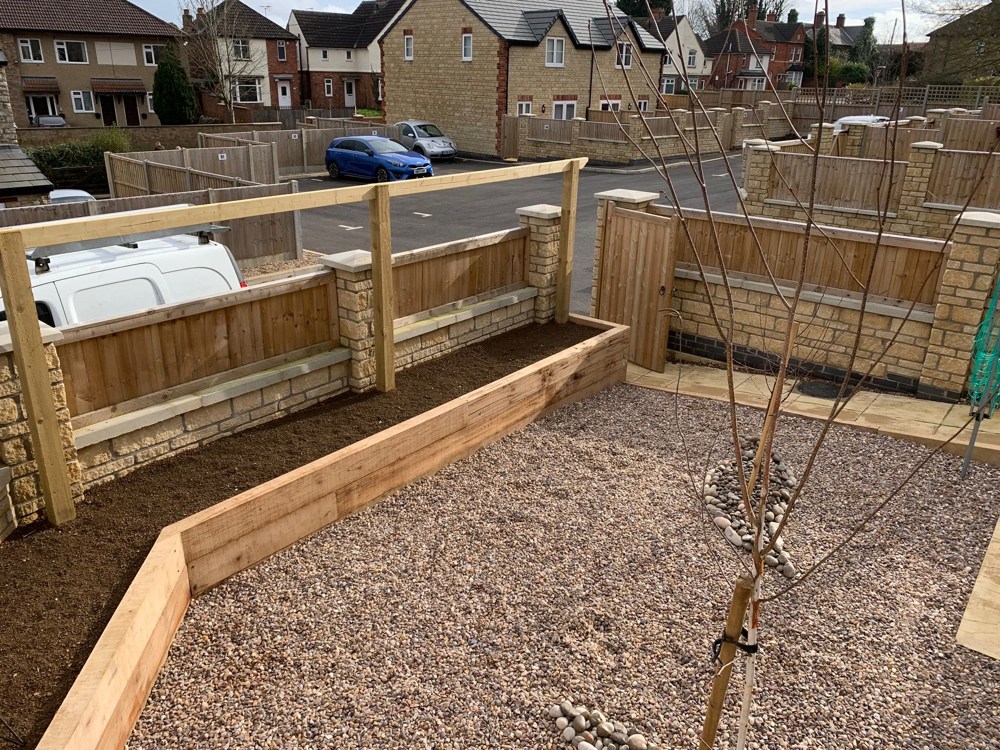
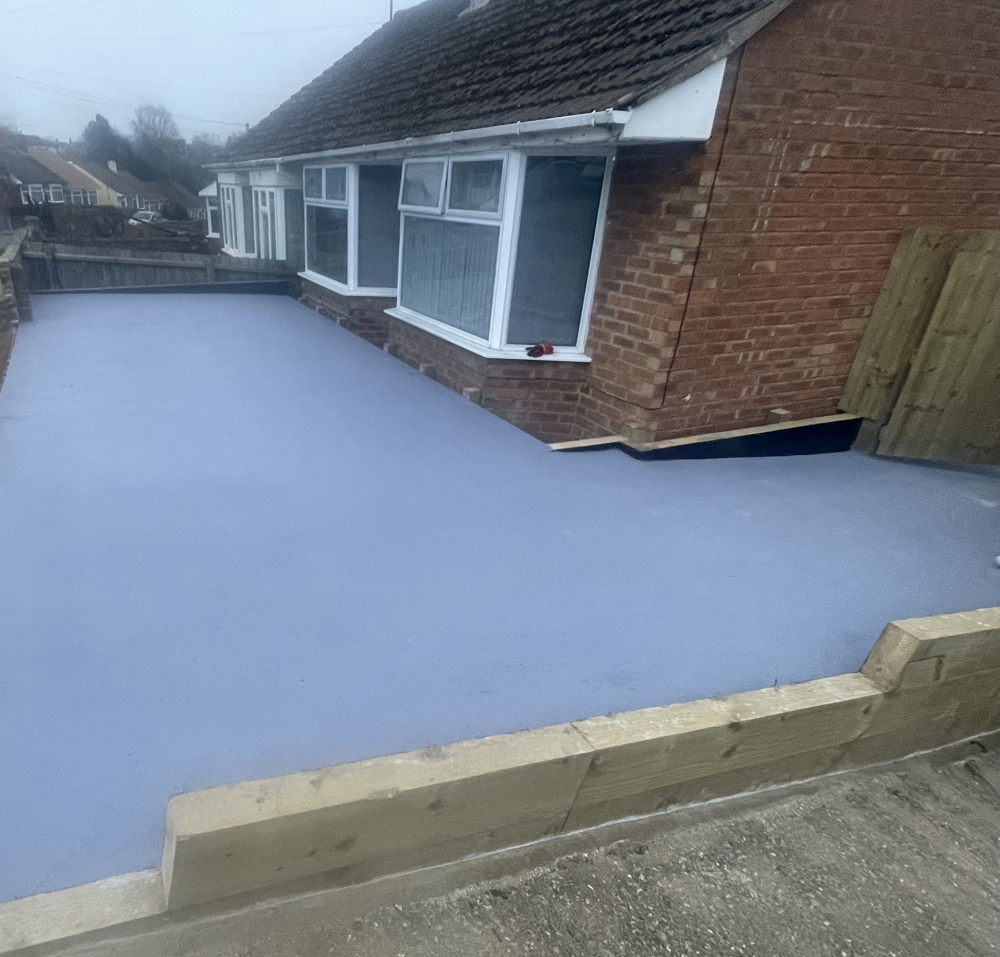

Sleeper Work
Retaining walls, planters, and more using durable sleepers.

Fencing
Quality fences built for security, privacy, and sturdiness.

Driveways
Concrete, block-paved—designed to stand the test of time.